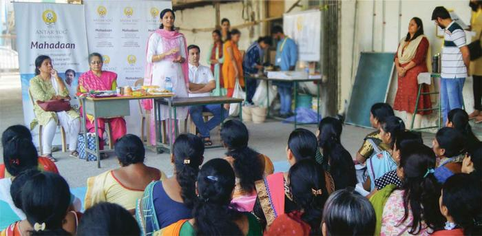

We work hard to earn, build, protect and grow. But the highest use of wealth is not only in what it gives us. It is in what it allows us to give back.
Through Antar Yog Daan, your contribution can become food for the hungry, education for children, care for the elderly, support for the ailing, protection for Dharma, preservation of Sanatan wisdom and a permanent foundation for Guru karya.
This is your opportunity to turn prosperity into punya, success into seva and wealth into a blessing for your family and future generations.

Why Antar Yog Daan Is Unique
A Donation That Is Directed, Rooted And Accountable
Antar Yog Daan is not scattered across vague causes. It is guided by the spiritual principle of Supatra Daan, which means giving to the right recipient, for the right purpose and with the right bhav. Your daan through Antar Yog Foundation carries deeper meaning because it is:
🌊 Amplified
Your contribution becomes part of a collective effort that can serve many lives together.
🧎 Rooted In Sanatan Dharma
Giving is offered with seva bhav, humility and the sacred intention of upliftment.
🎯 Directed Towards The Truly Deserving
Careful efforts are made to identify those who genuinely need support.
✨ Spiritually Powerful
Daan offered with the right bhav creates punya, blessings, peace and prosperity.
🤝 Handled With Responsibility
Contributions are directed towards specific seva initiatives with accountability and care.
🎯 Your Sankalp Matters
Every rupee joins a larger stream of seva, reaching those who truly need support with dignity.
Daan Opportunities
Most Donors Begin Here

Anna Daan: Feed Lives, Offer Seva, Earn Punya
Food is the most immediate act of compassion. When you offer Anna Daan, your contribution becomes a meal for devotees, seekers, volunteers and those in need.
Learn More & Donate →
Special Occasion Daan: Celebrate By Giving Joy
Turn birthdays, anniversaries, festivals, housewarmings, achievements and memorials into acts of seva. Share your blessings with those who need food, care, education and support.
Learn More & Donate →Sadhu And Sanyasi Seva
While we build our homes, Sadhus and Sanyasis renounce everything to keep the spiritual fire of Sanatan Dharma alive. Your daan provides them food, healthcare and dignity.
Learn More & Donate →Ved Rakshak Seva
Brahmans quietly preserve the Ved, mantra, rituals and Dharma that protect our families. Your daan supports their bhojan, education, healthcare and dignity.
Learn More & Donate →
Bal Seva
Many children dream with empty stomachs and torn notebooks. Your daan can give them food, education, healthcare, safety and the courage to dream again.
Learn More & Donate →Orphan Seva
Some children have lost the loving embrace of parents. Your daan can provide food, shelter, education, healthcare and the warmth of belonging.
Learn More & Donate →Divyang Seva
Many specially abled individuals face daily challenges. Your daan can provide mobility support, healthcare, education and opportunities for independence.
Learn More & Donate →
Suvasini Seva
In Sanatan Dharma, a married woman is revered as a living embodiment of Shakti, prosperity and auspiciousness.
Learn More & Donate →
Karuna Seva
Support food, education, healthcare and essential care for families facing hardship. Your contribution becomes hope, dignity and opportunity.
Learn More & Donate →
Elder Care Seva
Support food, healthcare, warmth and care for senior citizens in need. Help elders live their later years with dignity, comfort and respect.
Learn More & Donate →
Aarogya Seva
Help provide medical care, medicines, holistic healing and wellness support to individuals facing illness, hardship and health challenges.
Learn More & Donate →
Guru Daan
Brahmarishi Acharya Upendra Ji's teachings have brought clarity, healing and spiritual direction to countless seekers. Your daan carries this wisdom forward.
Learn More & Donate →
Gau Seva
Serve Gau Mata through food, shelter, medical care and protection. Your seva preserves Dharma and brings blessings to families and future generations.
Learn More & Donate →
Gyan Daan
Help print and distribute life-transforming books based on Brahmarishi Acharya Upendra Ji's wisdom. Your daan carries Sanatan knowledge to sincere seekers.
Learn More & Donate →
Bhoomi Daan
Contribute towards land for a new Antar Yog Ashram where seekers can experience sadhana, healing and spiritual education for generations to come.
Learn More & Donate →Gurukul Daan
The Antar Yog Gurukul currently stands as a rented space of sadhana, seva and Guru karya. Your daan can help make this sacred space permanent.
Learn More & Donate →Guru Seva
Not all daan is monetary. Offer your abilities towards Guru karya and become part of a living spiritual mission through seva of your hands, heart and commitment.
Learn More & Donate →Why Daan Matters For Doers And Leaders
Great Leaders Do Not Only Create Wealth. They Create Impact.
For those who are blessed with resources, influence and capacity, daan becomes one of the most powerful ways to transform success into meaning.
A true leader does not ask, "How much can I keep?"
A true leader asks, "How many lives can I uplift?"
- Convert your success into meaningful impact.
- Support people who truly need help.
- Participate in Dharma karya under the guidance of Brahmarishi Acharya Upendra Ji.
- Create punya for yourself, your family and future generations.
- Leave behind a legacy of contribution, not just accumulation.
What Your Contribution Supports
Your Daan Becomes Food, Education, Healing And Dharma Seva
Every contribution to Antar Yog Foundation supports work that touches lives at the physical, mental, social and spiritual levels.
🍱 Food Distribution
Food distribution for the poor, diseased, elderly and differently-abled.
🛍 Daily Essentials
Groceries and daily essentials for families in need.
💊 Healthcare
Medicines and healthcare support for the underprivileged.
📚 Education
Education support for children, orphans and deserving students.
🧔 Spiritual Education
Spiritual education and sadhana opportunities for seekers.
🤝 Dharma Seva
Support for Brahmans, Sadhus, Sanyasis and those preserving spiritual wisdom.
🏛 Sacred Infrastructure
Sacred infrastructure for sadhana, healing, learning and seva.
The Vedic Way Of Giving
Give With OM TAT SAT Bhav
As described in the Bhagavad Gita, daan offered with the right bhav becomes spiritually powerful.
Seeing the Divine in the recipient.
Offering selflessly, without ego or attachment.
Giving for the true welfare and upliftment of others.
When daan is offered with this bhav, it purifies wealth, uplifts the receiver and returns as blessings to the giver.
Yes, I Want To Make My Contribution SacredSupatra Daan
The Highest Daan Is Given Where It Creates The Highest Impact
In Sanatan Dharma, the highest form of daan is Supatra Daan — giving to a deserving person, cause or mission. Wealth offered for Dharma, seva and upliftment becomes immortal.
Karna, Bali and Vikramaditya are remembered not only for what they possessed, but for what they gave. Their names outlasted their kingdoms.
- A leader's true legacy is not in riches but in generosity.
- A visionary's success is not in knowledge alone but in its selfless use.
- A true giver is remembered through the lives transformed by their daan.
Suggested Daan Slabs
Every Level Of Giving Creates A Different Scale Of Impact
A beginning — an act of intention.
Food, essentials and care.
Dedicated seva initiative.
Meaningful Dharma seva support.
Welfare at a scale that changes lives.
High-impact spiritual and social support.
A legacy contribution beyond the moment.
Ways To Contribute
Choose The Form Of Daan That Matches Your Sankalp
Every donor has a different bhav, capacity and purpose. Antar Yog Daan allows you to contribute in the way that aligns with your intention.
⚡ One-Time Mahadaan
Make a powerful one-time contribution towards the mission of Antar Yog Foundation.
🔄 Monthly Seva Commitment
Become a steady supporter. Monthly daan helps sustain meals, welfare, sadhana, healing and outreach consistently.
🏆 Annual Patron Contribution
Offer a larger annual contribution towards spiritual education, seva and foundation activities.
🏢 Corporate & CSR Partnership
Partner with Antar Yog Foundation for spiritual education, holistic health and Dharma-based nation-building.
Let Your Daan Carry A Name, A Sankalp Or A Family's Blessings
Contribute in memory of ancestors, on birthdays, anniversaries, special occasions or as a sankalp for your family's well-being.
Yes, I Want To Choose My Daan SankalpTrust And Transparency
Your Daan Is Handled As A Sacred Responsibility
At Antar Yog Foundation, every contribution is treated with the same seriousness and care as the seva it is meant to support.
🏛 Registered Foundation
Antar Yog Foundation is a registered entity. [Insert registration details here]
📄 Tax Benefit Under 80G
Donations qualify for tax deduction under Section 80G. [Insert PAN and 80G details here]
🔒 Official Payment Channels
Official bank accounts and verified digital payment options only. [Insert bank and UPI details here]
🧾 Donation Receipt
A formal receipt is issued for every eligible contribution.
📊 Impact Communication
Donors above a certain level receive periodic updates on how their daan is being used.
🎯 Project-Wise Accountability
Where dedicated to a specific initiative, updates may be provided on its progress.
Current Seva In Progress
This Is What Your Daan Is Supporting Right Now
Anna Daan — Monthly Meal Seva
We are serving 200 meals this month at our seva centre. Help us reach 300 meals for devotees, seekers and those in need.
Transform Lives.
Attract Abundance. Leave A Legacy.
When you offer daan for a higher purpose, you do not lose wealth. You purify it. You convert it into punya, blessings, impact and legacy.
Join the Antar Yog Daan Movement — transforming minds, transforming lives, transforming Bharat.